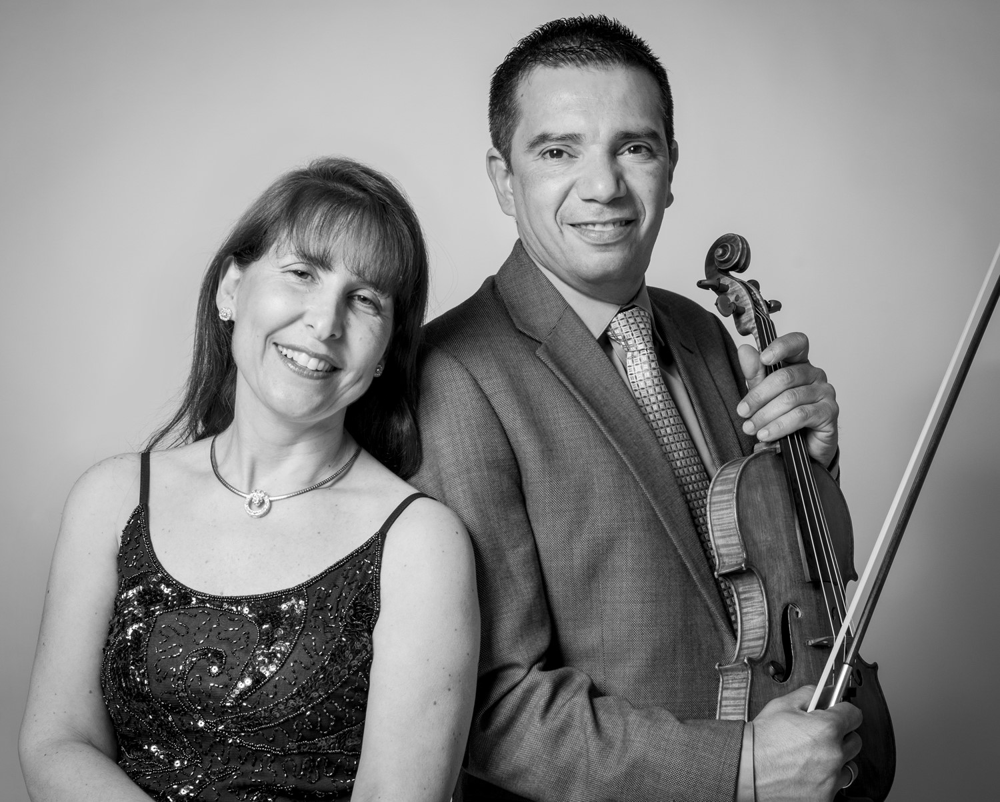

ELIAS DUO
The husband and wife Elias Duo, formed by Carlos Elias, violin and Andrea Arese-Elias, piano, have played concerts in numerous countries such as Argentina, El Salvador, Japan, Bulgaria and the United States. Praised for their highly expressive performances, the Elias Duo performs works of the standard repertoire as well as Latin American and tango music.
